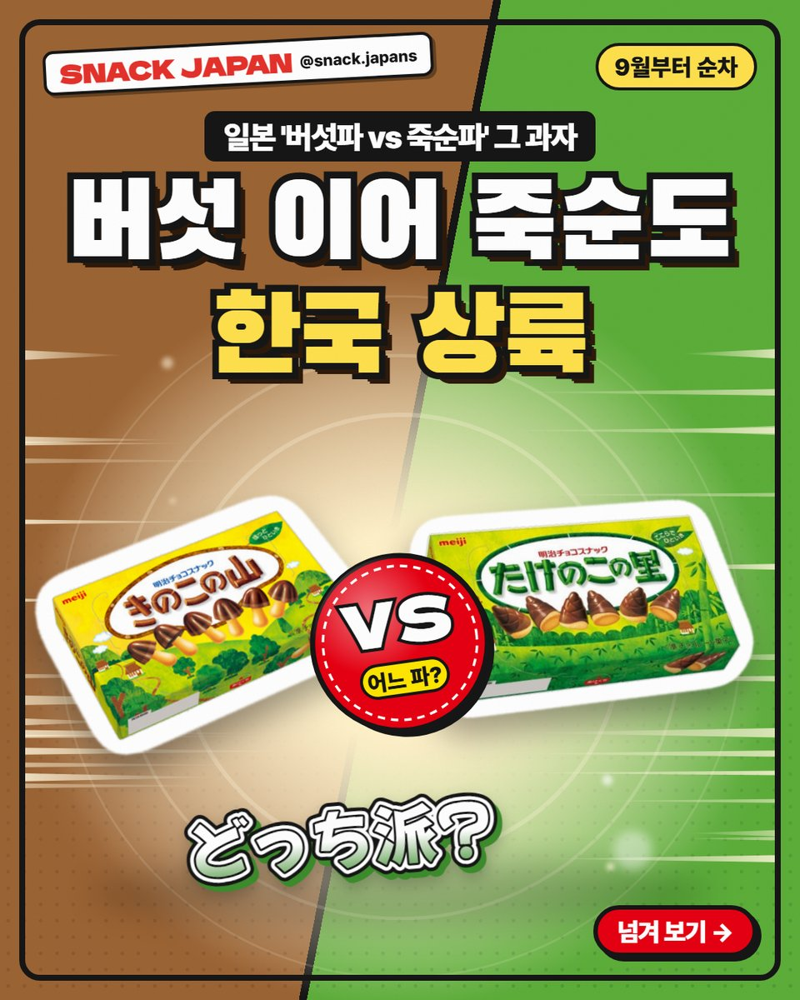
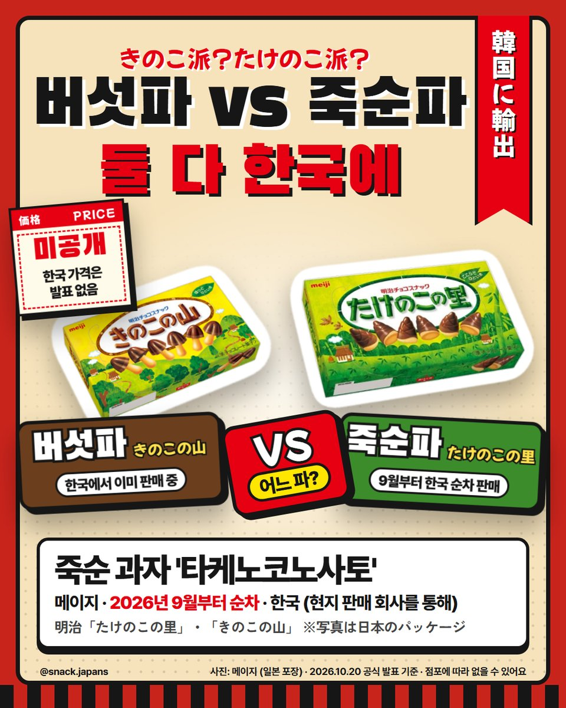
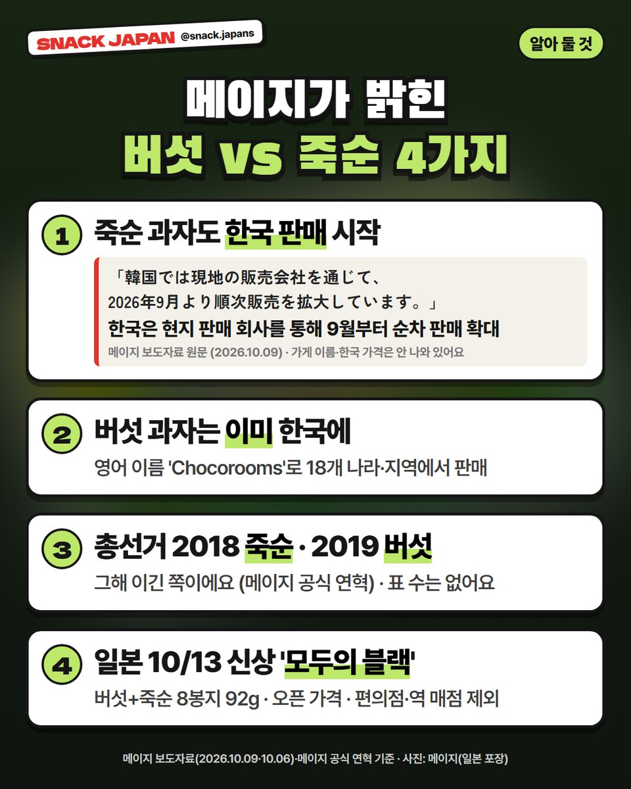
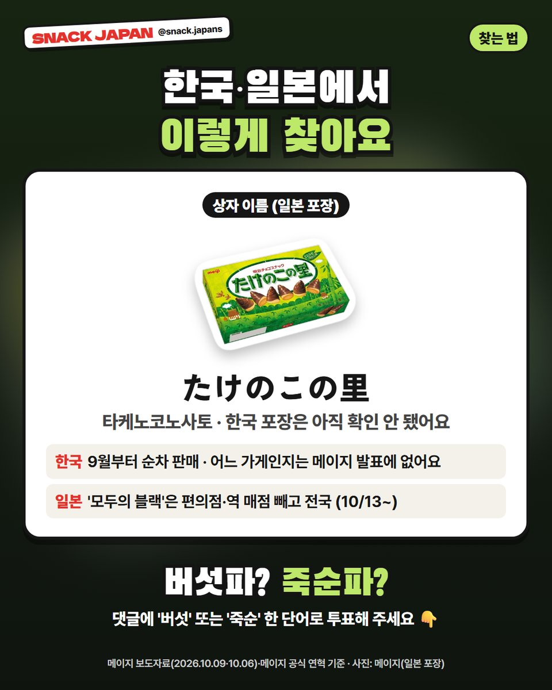

타케노코노사토 한국 판매 시작, 버섯파 vs 죽순파 이제 한국에서도 고른다
메이지가 죽순 과자 '타케노코노사토'를 한국에 수출! 짝꿍 키노코노야마는 이미 한국에 있어서, 이제 둘 다 한국에 있는 셈이에요.
일본에서 '버섯파 vs 죽순파'로
편 가르는 그 과자 아세요? 🍄
메이지 키노코노야마(버섯)와 타케노코노사토(죽순)!
이번에 죽순 쪽도 한국에서 판대요.
메이지 보도자료 기준으로 정리해 볼게요!

1. 9월부터 한국 순차 판매!
- 상품: 타케노코노사토 (たけのこの里, '죽순의 마을')
- 만드는 곳: 메이지
- 한국: 현지 판매 회사를 통해 2026년 9월부터 순차적으로 판매를 넓히는 중 (메이지 보도자료 10/9)
- 가격: 한국 가격은 아직 발표에 없어요
- 파는 곳: 한국 판매 회사 이름·어느 가게인지도 발표에 없어요

2. 버섯 과자는 이미 한국에!
짝꿍 '키노코노야마(きのこの山, 버섯의 산)'는
이미 한국에서 팔고 있어요.
- 영어 이름 'Chocorooms'로 18개 나라·지역에서 판매 (2026년 9월 기준, 메이지 발표)
- 메이지는 '어느 파?' 놀이를 해외에도 넓히고 싶대요
- 대만·한국은 '죽순' 자체가 익숙한 음식 문화라서 타케노코도 진출했대요 (메이지 설명)

3. 일본 '국민 총선거' 결과는?
메이지 공식 연혁에 나온 것만 보면
- 2018년: 죽순당 승리 (17년 만의 총선거)
- 2019년: 버섯당 첫 승리
표 수는 공식 연혁에 없어요.
4. 일본에선 '모두의 블랙'도 나왔어요
10/13에 버섯+죽순이 한 봉지에 든
'키노코노야마와 타케노코노사토 모두의 블랙'이 나왔어요.
- 8봉지 92g (버섯 4봉 + 죽순 4봉)
- 너무 달지도 쓰지도 않은 '딱 좋은 블랙'이래요 (메이지 설명)
- 파는 곳: 편의점·역 매점을 뺀 일본 전국
- 가격: 오픈 가격

5. 한국·일본에서 찾는 법
- 일본 이름: たけのこの里
- 한국: 어느 가게에서 파는지는 메이지 발표에 없어요
- 한국 포장(한글 표기 등)도 아직 확인 안 됐어요 (사진은 일본 포장)
총평
- 기준: 메이지 보도자료(10/9·10/6)·메이지 공식 연혁, 10월 20일 확인
- 추천: 일본 여행 때 버섯·죽순 둘 다 사 오던 분, '어느 파' 논쟁 좋아하는 분
여러분은 버섯파예요, 죽순파예요?
한국 매장에서 벌써 보신 분 계세요? 🎋